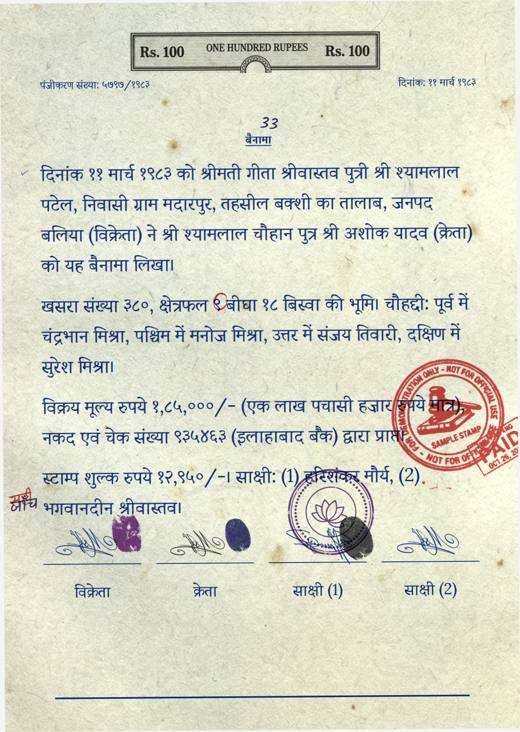
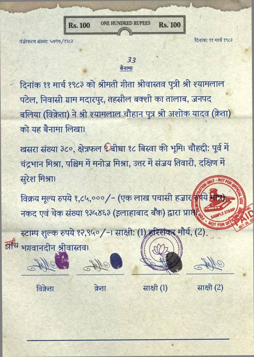
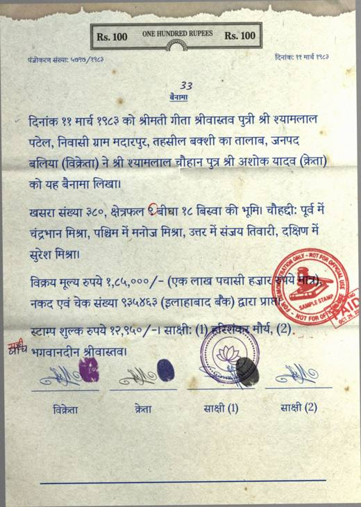
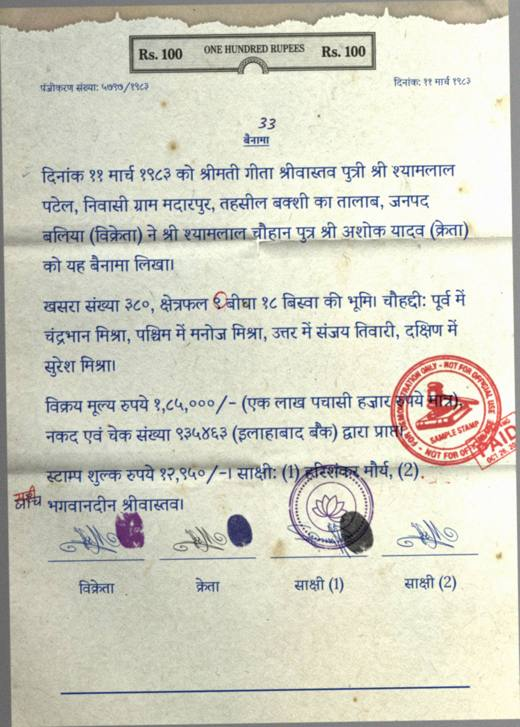
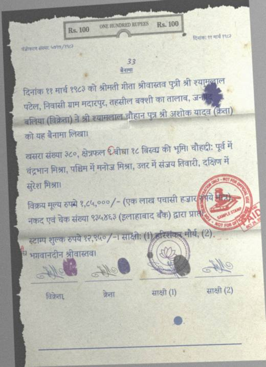
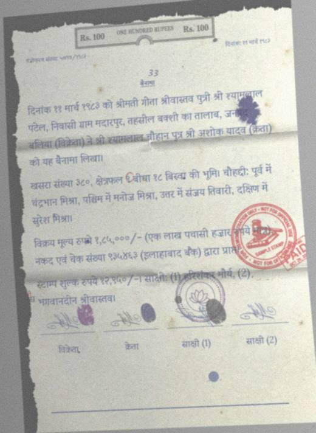
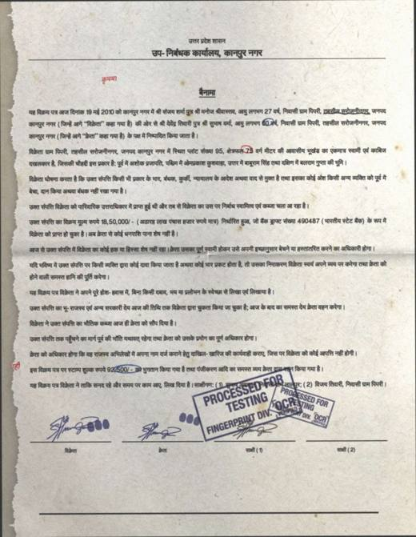
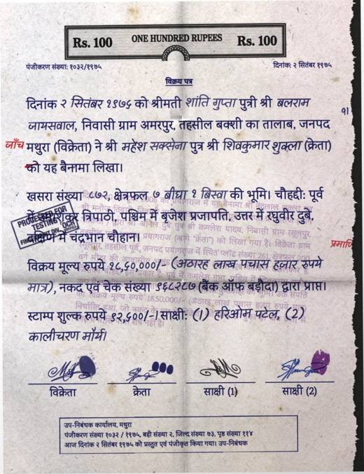
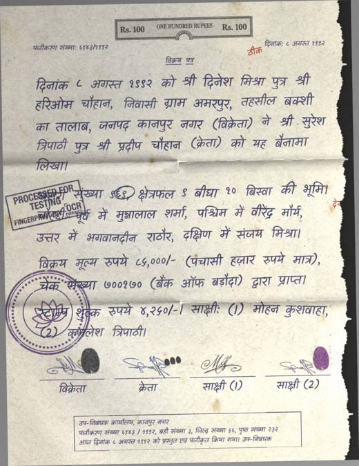
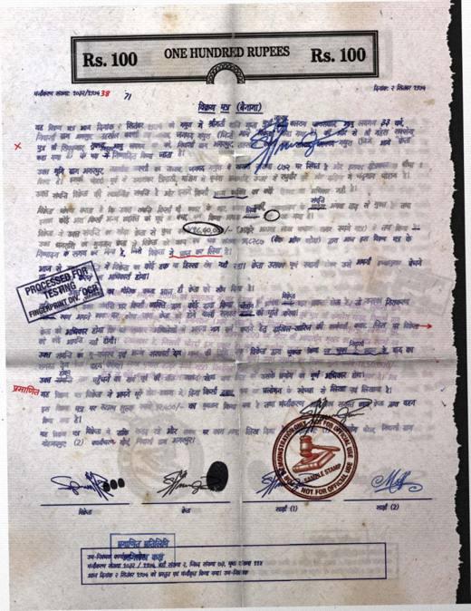

How well can a computer read our fake Hindi deeds?
Reader tested: Tesseract. 265 pages scored. Page file made 2026-10-27.
We made fake Hindi sale deeds where we know every name, date and amount. We damaged them step by step, then asked a free reading program to read each page and checked its answer against what we know is written.
What stands out
- The harder the page, the more the reader misses. Out of 100 letters it gets wrong or loses 14 on easy pages, 25 on medium and 58 on hard.
- Damage is a big part of it. The same hard pages without any damage lose 18 out of 100, so the damage adds about 41.
- Handwriting-style text is harder than printed text. 56 out of 100 lost on handwriting-style pages, against 34 on printed ones.
- Our hardest handwriting set is close to unreadable for this reader. It finds 2.2% of the key facts and 100% of the pages count as failed.
- Numbers are the weak spot. Even on the clean printed copy only 52% of numbers are read exactly, against 84% for all facts, because single digits slip.
- Part of the error is not the reader's fault. On printed pages, 12 of every 24 counted errors are extra text (stamps, notes and header art the reader sees but our answer does not list).
What we did, and why
Write fake deeds
We decide every name, date, place and amount first, then write the deed text from them.
Why: So we always know the right answer for every page.
Draw the pages
Each deed is drawn like a real page: fonts, headers, stamps, signatures, thumbprints, margin notes, some handwriting-style text.
Why: Real deeds are messy, and a reader trained or tested on neat pages will not cope with them.
Damage them in 5 steps
Folds, tears, blur, ink marks, scan noise, increasing from stage 1 to stage 5. From light to severe: 1 scan wear, 2 paper ageing, 3 ink damage, 4 geometry and physical, 5 severe.
Why: We want to know at which point a reader breaks, so the damage grows in steps.
Label each page easy, medium or hard
A score from how much of the text is covered, how faint it is, and how much is handwriting or small print.
Why: So we can say how bad a page is without running a reader. The label is a first version and still needs checking against real pages.
Make a clean printed copy as a control
The same text in a plain printed font on a white page, nothing damaged.
Why: It shows how good the reader is when the page is fine. Any drop on our pages is then due to the pages, not the reader.
Let the reader read every page
Tesseract reads each page and we compare its text with the answer, letter by letter and fact by fact.
Why: The same cleaning and the same rules apply to every reader, so results can be compared.
Group the results
By how hard the page is, damage stage and kind of text. Also a clean copy of each page, to separate damage from everything else.
Why: To see what makes pages hard, not only how hard they are.
What the pages look like
The same page, from clean to severe damage.






Other kinds of page we test on.




Results
- Wrong or missed letters
- letters in the answer that the reader got wrong or left out, per 100 letters of the answer. Lower is better.
- Extra letters
- text the reader wrote that is not in the answer. On our pages it is mostly stamps and notes.
- Key facts found
- names, places, dates and amounts from the answer that appear exactly in the reader's text.
- Failed page
- more than half of the letters wrong.
All the numbers
| Group | Pages | Letters missed per 100 | Extra per 100 | Key facts found | Numbers found | Failed pages |
|---|---|---|---|---|---|---|
| Damaged, set A, difficulty easy | 16 | 14 | 8.9 | 62% | 45% | 0.0% |
| Damaged, set A, difficulty hard | 49 | 58 | 4.3 | 18% | 10% | 63% |
| Damaged, set A, difficulty medium | 35 | 25 | 10 | 44% | 25% | 37% |
| Damaged, set B, difficulty hard | 40 | 86 | 0.5 | 2.2% | 0.0% | 100% |
| Damaged, set C, difficulty easy | 6 | 6.9 | 16 | 66% | 48% | 33% |
| Damaged, set C, difficulty hard | 11 | 64 | 12 | 17% | 11% | 82% |
| Damaged, set C, difficulty medium | 8 | 31 | 15 | 43% | 36% | 50% |
| Damaged, set P, difficulty control | 100 | 0.6 | 0.1 | 84% | 52% | 0.0% |
| Damaged, set A, style handwritten | 28 | 56 | 7.4 | 17% | 11% | 68% |
| Damaged, set A, style hybrid | 31 | 34 | 8.3 | 29% | 13% | 35% |
| Damaged, set A, style printed | 41 | 34 | 6.3 | 50% | 33% | 34% |
| Damaged, set B, style handwritten | 40 | 86 | 0.5 | 2.2% | 0.0% | 100% |
| Damaged, set C, style handwritten | 10 | 57 | 15 | 13% | 3.6% | 80% |
| Damaged, set C, style hybrid | 5 | 24 | 39 | 41% | 30% | 100% |
| Damaged, set C, style printed | 10 | 22 | 8.5 | 60% | 51% | 20% |
| Damaged, set P, style printed | 100 | 0.6 | 0.1 | 84% | 52% | 0.0% |
| Damaged, set A, stage 1 | 8 | 17 | 12 | 44% | 29% | 25% |
| Damaged, set A, stage 2 | 11 | 15 | 14 | 50% | 33% | 27% |
| Damaged, set A, stage 3 | 29 | 29 | 9.4 | 44% | 28% | 31% |
| Damaged, set A, stage 4 | 31 | 41 | 5.6 | 29% | 15% | 48% |
| Damaged, set A, stage 5 | 21 | 67 | 1.8 | 16% | 9.4% | 71% |
| Damaged, set B, stage 4 | 20 | 78 | 0.9 | 4.2% | 0.0% | 100% |
| Damaged, set B, stage 5 | 20 | 95 | 0.0 | 0.2% | 0.0% | 100% |
| Damaged, set C, stage 1 | 5 | 15 | 19 | 48% | 32% | 40% |
| Damaged, set C, stage 2 | 5 | 11 | 18 | 49% | 36% | 40% |
| Damaged, set C, stage 3 | 5 | 35 | 13 | 42% | 36% | 60% |
| Damaged, set C, stage 4 | 5 | 57 | 12 | 28% | 21% | 80% |
| Damaged, set C, stage 5 | 5 | 58 | 8.5 | 19% | 14% | 80% |
| Damaged, set P, stage 0 | 100 | 0.6 | 0.1 | 84% | 52% | 0.0% |
| Clean copy, set A, difficulty easy | 16 | 11 | 8.8 | 63% | 41% | 0.0% |
| Clean copy, set A, difficulty hard | 49 | 18 | 16 | 42% | 25% | 33% |
| Clean copy, set A, difficulty medium | 35 | 16 | 13 | 49% | 30% | 37% |
| Clean copy, set B, difficulty hard | 40 | 50 | 6.2 | 15% | 9.1% | 70% |
| Clean copy, set C, difficulty easy | 6 | 9.6 | 12 | 64% | 52% | 33% |
| Clean copy, set C, difficulty hard | 11 | 25 | 20 | 34% | 21% | 45% |
| Clean copy, set C, difficulty medium | 8 | 12 | 18 | 53% | 40% | 38% |
| Clean copy, set A, style handwritten | 28 | 25 | 17 | 24% | 15% | 46% |
| Clean copy, set A, style hybrid | 31 | 16 | 14 | 39% | 16% | 29% |
| Clean copy, set A, style printed | 41 | 12 | 12 | 71% | 49% | 17% |
| Clean copy, set B, style handwritten | 40 | 50 | 6.2 | 15% | 9.1% | 70% |
| Clean copy, set C, style handwritten | 10 | 24 | 23 | 24% | 13% | 50% |
| Clean copy, set C, style hybrid | 5 | 24 | 45 | 38% | 27% | 100% |
| Clean copy, set C, style printed | 10 | 8.4 | 6.6 | 76% | 60% | 0.0% |
| Clean copy, set A, stage 1 | 8 | 18 | 15 | 41% | 20% | 25% |
| Clean copy, set A, stage 2 | 11 | 16 | 13 | 48% | 30% | 36% |
| Clean copy, set A, stage 3 | 29 | 14 | 14 | 53% | 31% | 28% |
| Clean copy, set A, stage 4 | 31 | 15 | 15 | 47% | 29% | 32% |
| Clean copy, set A, stage 5 | 21 | 18 | 13 | 46% | 30% | 24% |
| Clean copy, set B, stage 4 | 20 | 45 | 5.9 | 18% | 10% | 60% |
| Clean copy, set B, stage 5 | 20 | 55 | 6.5 | 13% | 7.8% | 80% |
| Clean copy, set C, stage 1 | 5 | 13 | 19 | 46% | 36% | 40% |
| Clean copy, set C, stage 2 | 5 | 15 | 17 | 47% | 39% | 40% |
| Clean copy, set C, stage 3 | 5 | 14 | 17 | 49% | 32% | 40% |
| Clean copy, set C, stage 4 | 5 | 15 | 16 | 48% | 32% | 40% |
| Clean copy, set C, stage 5 | 5 | 20 | 14 | 46% | 32% | 40% |
Why Tesseract as the first reader
- It is free, runs on a normal laptop, and has a Hindi language file, so anyone on the team can repeat the test.
- It is the usual starting point for OCR, so the numbers mean something to other people.
- It reads text only, with no AI guessing missing words, so its mistakes show what the page itself does to a reader.
- It is a starting point, not the best reader. A second reader and an AI model that reads whole pages are set up in the code but not run yet.
How scores are worked out: docs/SCORING.md. Raw numbers: docs/results/. This page was made by python -m benchmark.dashboard.